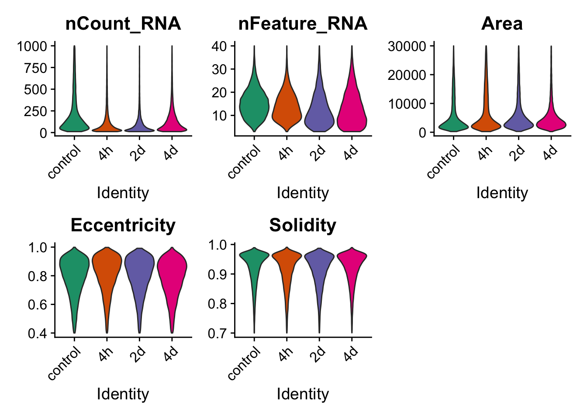
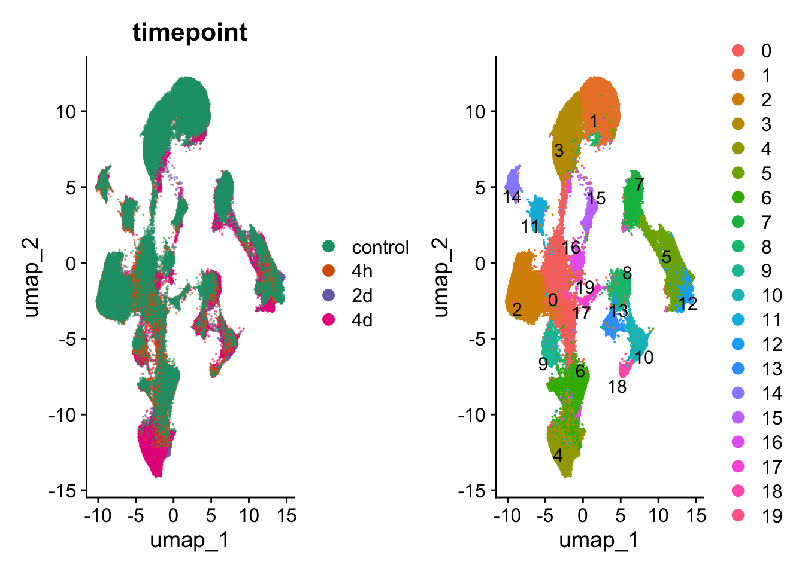
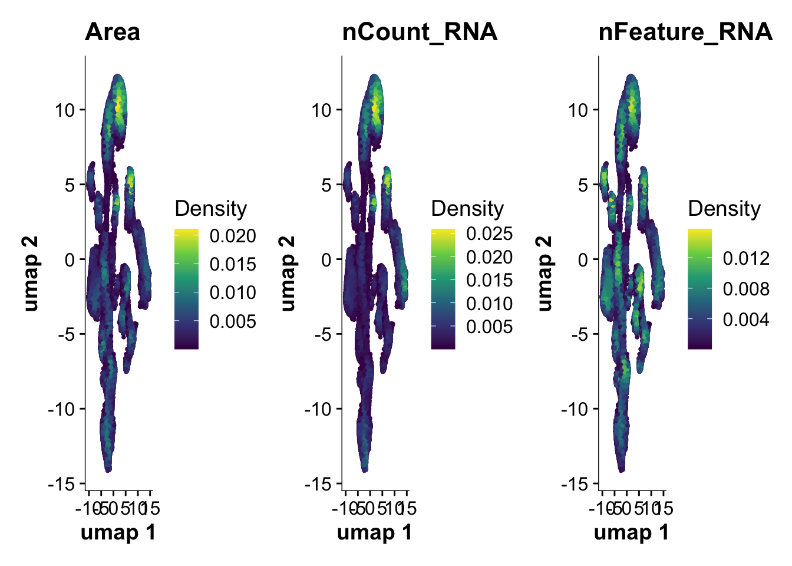
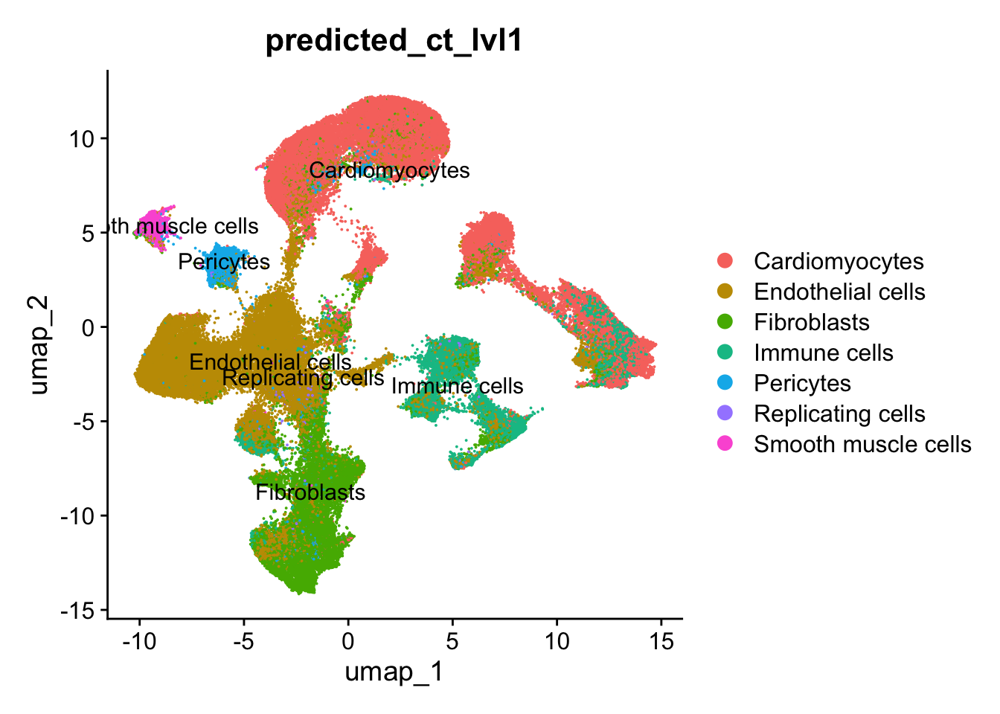
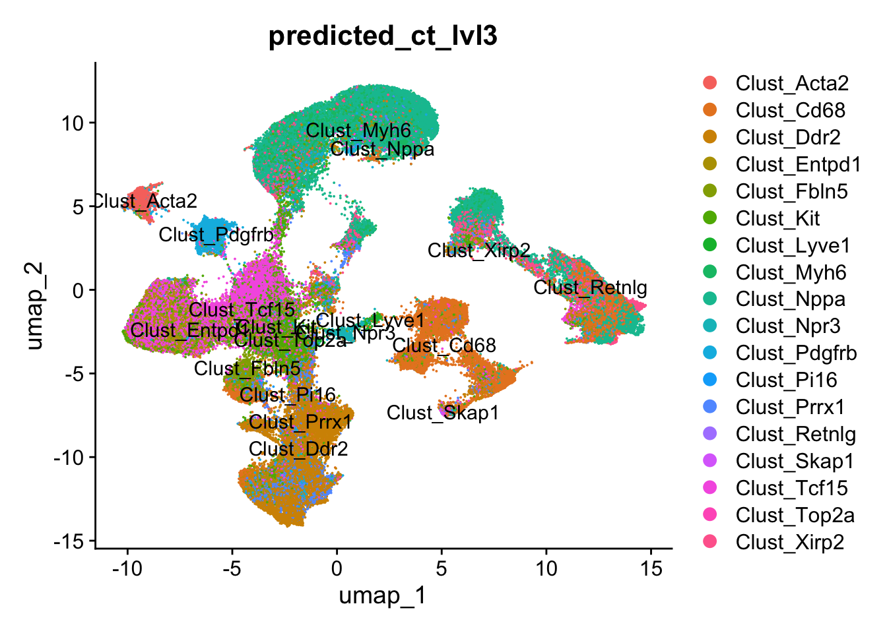
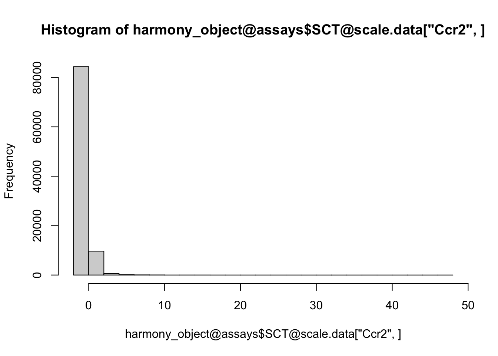
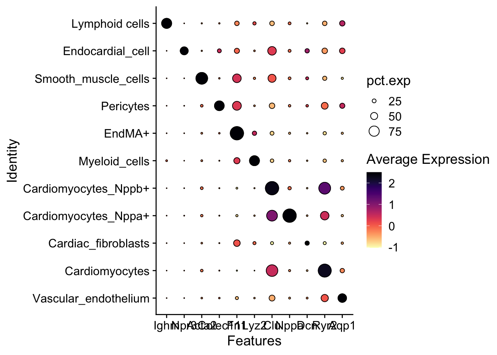

molecular_cartography.process_quantifications_seurat
FloWuenne
2023-07-26
Last updated: 2023-08-24
Checks: 6 1
Knit directory: mi_spatialomics/
This reproducible R Markdown analysis was created with workflowr (version 1.7.0). The Checks tab describes the reproducibility checks that were applied when the results were created. The Past versions tab lists the development history.
The R Markdown is untracked by Git. To know which version of the R
Markdown file created these results, you’ll want to first commit it to
the Git repo. If you’re still working on the analysis, you can ignore
this warning. When you’re finished, you can run
wflow_publish to commit the R Markdown file and build the
HTML.
Great job! The global environment was empty. Objects defined in the global environment can affect the analysis in your R Markdown file in unknown ways. For reproduciblity it’s best to always run the code in an empty environment.
The command set.seed(20230612) was run prior to running
the code in the R Markdown file. Setting a seed ensures that any results
that rely on randomness, e.g. subsampling or permutations, are
reproducible.
Great job! Recording the operating system, R version, and package versions is critical for reproducibility.
Nice! There were no cached chunks for this analysis, so you can be confident that you successfully produced the results during this run.
Great job! Using relative paths to the files within your workflowr project makes it easier to run your code on other machines.
Great! You are using Git for version control. Tracking code development and connecting the code version to the results is critical for reproducibility.
The results in this page were generated with repository version e8204f0. See the Past versions tab to see a history of the changes made to the R Markdown and HTML files.
Note that you need to be careful to ensure that all relevant files for
the analysis have been committed to Git prior to generating the results
(you can use wflow_publish or
wflow_git_commit). workflowr only checks the R Markdown
file, but you know if there are other scripts or data files that it
depends on. Below is the status of the Git repository when the results
were generated:
Ignored files:
Ignored: .DS_Store
Ignored: .Rhistory
Ignored: .Rproj.user/
Ignored: analysis/.DS_Store
Ignored: analysis/deprecated/.DS_Store
Ignored: data/.DS_Store
Ignored: data/140623.calcagno_et_al.seurat_object.rds
Ignored: data/molkart_tissue_regions_rois/.DS_Store
Ignored: figures/.DS_Store
Ignored: omnipathr-log/
Ignored: output/.DS_Store
Ignored: output/figure3.pixie_cell_cluster_heatmap.png
Ignored: output/figure3.pixie_pixel_cluster_heatmap.png
Ignored: output/figure3.pixie_pixel_cluster_heatmap.tiff
Ignored: output/harmony.molkart.h5Seurat
Ignored: output/lunaphore_images/
Ignored: output/mol_cart/
Ignored: output/proteomics/
Ignored: output/seqIF/
Ignored: plots/.DS_Store
Ignored: plots/Figure1.umap_plot.pdf
Ignored: references/.DS_Store
Ignored: renv/.DS_Store
Ignored: renv/library/
Ignored: renv/staging/
Untracked files:
Untracked: analysis/__pycache__/
Untracked: analysis/deprecated/molkart.quantify_cells_in_regions.ipynb
Untracked: analysis/deprecated/napari_points.ipynb
Untracked: analysis/deprecated/roi.csv
Untracked: analysis/deprecated/roi2.csv
Untracked: analysis/deprecated/test_construct_spatialdata.ipynb
Untracked: analysis/figures.deep_visual_proteomics.Rmd
Untracked: analysis/mol_cart.QC_spots.Rmd
Untracked: analysis/mol_cart.molkart.Figure1.Rmd
Untracked: analysis/mol_cart.molkart.process_quantifications_seurat.Rmd
Untracked: analysis/molecular_cartography_python/
Untracked: analysis/seqIF.heatmaps_pixie.figure3.Rmd
Untracked: analysis/seqIF_python/
Untracked: analysis/spatialMI_functions.py
Untracked: data/Calcagno2022_int_logNorm_annot.h5Seurat
Untracked: data/pixie.cell_table_size_normalized_cell_labels.csv
Untracked: plots/Figure3.cell_types_overtimes.pdf
Untracked: plots/Figure3.pixel_clusters_overtimes.pdf
Untracked: references/mol_cart.heart_regions/
Unstaged changes:
Modified: .gitignore
Modified: analysis/data_analysis.Rmd
Modified: analysis/data_processing.Rmd
Modified: analysis/figures.Rmd
Deleted: analysis/figures.figure_5.Rmd
Modified: analysis/figures.supplementary_figure_X.proteomics_qc.Rmd
Deleted: analysis/molkart.Figure1.Rmd
Deleted: analysis/molkart.QC_spots.Rmd
Deleted: analysis/molkart.process_quantifications_seurat.Rmd
Modified: analysis/proteomics.bulk_de_analysis.Rmd
Modified: analysis/proteomics.filter_proteomic_data.Rmd
Modified: analysis/proteomics.pathway_enrichment_analysis.Rmd
Modified: analysis/proteomics.scRNAseq_comparison.Rmd
Deleted: analysis/python/lunaphore.figure_3.create_pixie_images.ipynb
Deleted: analysis/python/lunaphore.figure_3.pixie_heatmaps.ipynb
Deleted: analysis/python/molkart.count_spots_on_tissue.ipynb
Deleted: analysis/python/molkart.plot_MC_spots.ipynb
Deleted: analysis/python/molkart.plot_spots_figure1.ipynb
Deleted: analysis/python/molkart.quantify_cells_in_regions.ipynb
Deleted: analysis/python/napari_points.ipynb
Deleted: analysis/python/roi.csv
Deleted: analysis/python/roi2.csv
Deleted: analysis/python/spatialMI_functions.py
Deleted: analysis/python/test_construct_spatialdata.ipynb
Deleted: data/molkart.spots_per_tissue.tsv
Modified: figures/Figure_5.eps
Modified: figures/Figure_5.pdf
Modified: figures/Figure_5.png
Modified: figures/Figure_5.svg
Modified: output/molcart.misty_celltype_table.tsv
Deleted: output/molkart_segmentation_images/sample_control_r1_s1.DAPI_WGA.crop.png
Deleted: output/molkart_segmentation_images/sample_control_r1_s1.DAPI_WGA.crop.scale.png
Deleted: output/molkart_segmentation_images/sample_control_r1_s1.DAPI_WGA.roi.tif
Deleted: output/molkart_segmentation_images/sample_control_r1_s1.DAPI_WGA.tif
Deleted: output/molkart_segmentation_images/sample_control_r1_s1.DAPI_WGA_roi.crop.png
Deleted: output/molkart_segmentation_images/sample_control_r1_s1.DAPI_WGA_roi.crop.scale.png
Deleted: output/molkart_segmentation_images/sample_control_r1_s1.cellpose_full_image.outline.tif
Deleted: output/molkart_segmentation_images/sample_control_r1_s1.cellpose_full_image.roi.outline.tif
Deleted: output/molkart_segmentation_images/sample_control_r1_s1.cellpose_full_image.roi.tif
Deleted: output/molkart_segmentation_images/sample_control_r1_s1.cellpose_full_image.tif
Deleted: output/molkart_segmentation_images/sample_control_r1_s1.cellpose_mask.crop.png
Deleted: output/molkart_segmentation_images/sample_control_r1_s1.cellpose_mask.crop.scale.png
Deleted: output/molkart_segmentation_images/sample_control_r1_s1.cellpose_mask_roi.crop.png
Deleted: output/molkart_segmentation_images/sample_control_r1_s1.cellpose_mask_roi.crop.scale.png
Deleted: output/proteomics.filt_imputed_proteins.tsv
Deleted: output/proteomics.filtered_proteins.tsv
Deleted: output/proteomics.pca_res.rds
Deleted: output/proteomics.protein_missing_stats.tsv
Deleted: output/proteomics.vsn_norm_proteins.tsv
Modified: plots/Figure1.dotplot.pdf
Note that any generated files, e.g. HTML, png, CSS, etc., are not included in this status report because it is ok for generated content to have uncommitted changes.
There are no past versions. Publish this analysis with
wflow_publish() to start tracking its development.
Introduction
library(Seurat)Loading required package: SeuratObjectLoading required package: spThe legacy packages maptools, rgdal, and rgeos, underpinning the sp package,
which was just loaded, will retire in October 2023.
Please refer to R-spatial evolution reports for details, especially
https://r-spatial.org/r/2023/05/15/evolution4.html.
It may be desirable to make the sf package available;
package maintainers should consider adding sf to Suggests:.
The sp package is now running under evolution status 2
(status 2 uses the sf package in place of rgdal)
Attaching package: 'SeuratObject'The following objects are masked from 'package:base':
intersect, saveRDSLoading Seurat v5 beta version
To maintain compatibility with previous workflows, new Seurat objects will use the previous object structure by default
To use new Seurat v5 assays: Please run: options(Seurat.object.assay.version = 'v5')library(SeuratData)
library(SeuratDisk)Registered S3 method overwritten by 'SeuratDisk':
method from
as.sparse.H5Group Seuratoptions(Seurat.object.assay.version = "v5")
library(data.table)
library(harmony)Loading required package: Rcpplibrary(here)here() starts at /Users/florian_wuennemann/1_Projects/MI_project/mi_spatialomicslibrary(Nebulosa)Loading required package: ggplot2Loading required package: patchworklibrary(tidyverse)── Attaching core tidyverse packages ──────────────────────── tidyverse 2.0.0 ──
✔ dplyr 1.1.2 ✔ readr 2.1.4
✔ forcats 1.0.0 ✔ stringr 1.5.0
✔ lubridate 1.9.2 ✔ tibble 3.2.1
✔ purrr 1.0.1 ✔ tidyr 1.3.0── Conflicts ────────────────────────────────────────── tidyverse_conflicts() ──
✖ dplyr::between() masks data.table::between()
✖ dplyr::filter() masks stats::filter()
✖ dplyr::first() masks data.table::first()
✖ lubridate::hour() masks data.table::hour()
✖ lubridate::isoweek() masks data.table::isoweek()
✖ dplyr::lag() masks stats::lag()
✖ dplyr::last() masks data.table::last()
✖ lubridate::mday() masks data.table::mday()
✖ lubridate::minute() masks data.table::minute()
✖ lubridate::month() masks data.table::month()
✖ lubridate::quarter() masks data.table::quarter()
✖ lubridate::second() masks data.table::second()
✖ purrr::transpose() masks data.table::transpose()
✖ lubridate::wday() masks data.table::wday()
✖ lubridate::week() masks data.table::week()
✖ lubridate::yday() masks data.table::yday()
✖ lubridate::year() masks data.table::year()
ℹ Use the conflicted package (<http://conflicted.r-lib.org/>) to force all conflicts to become errorslibrary(GGally)Registered S3 method overwritten by 'GGally':
method from
+.gg ggplot2source("./code/functions.R")
Attaching package: 'cowplot'
The following object is masked from 'package:lubridate':
stamp
The following object is masked from 'package:patchwork':
align_plotsIntroduction
In this analysis, we will process the single-cell quantification from nf-Molkart. These tables are basically the output from the regionprops command from scikit and contain properties from the segmentation masks, as well as the count of RNA molecules per gene. We will parse these tables to extract the transcript counts, put these in the expression matrix slots from Seurat and extract the metadata for samples and segmentation masks and put these into the metadata slot of Seurat objects.
Read data
Process mcquant tables to seurat object list
final_samples <- c("sample_control_r1_s1","sample_control_r2_s1",
"sample_4h_r1_s1","sample_4h_r2_s2",
"sample_2d_r1_s1","sample_2d_r2_s1",
"sample_4d_r1_s1","sample_4d_r2_s1")
seurat_objects <- list()
## SCTransform based clustering across all samples
sample_dir <- "../data/nf_molkart_results/quantification/cellpose"
seurat_list <- list()
segmethod_samples <- list.files(sample_dir)
for(sample in segmethod_samples){
sample_ID <- strsplit(sample,"\\.")[[1]][1]
if(endsWith(sample,".mcquant_fix.csv") & sample_ID %in% final_samples){
print(sample_ID)
sample_quant <- fread(paste(sample_dir,sample,sep="/"))
seurat_object <- create_seurat_sctransform_mcquant(sample_quant,sample_ID)
seurat_list[[sample_ID]] <- seurat_object
}
}[1] "sample_2d_r1_s1"
[1] "sample_2d_r2_s1"
[1] "sample_4d_r1_s1"
[1] "sample_4d_r2_s1"
[1] "sample_4h_r1_s1"
[1] "sample_4h_r2_s2"
[1] "sample_control_r1_s1"
[1] "sample_control_r2_s1"resolve_object <- merge(seurat_list[[1]], y = c(seurat_list[-1]), project = "Molecular_Cartography")Plot distribution of transcript counts and mask properties
## Set order of timepoints
resolve_object@meta.data$timepoint <- factor(resolve_object@meta.data$timepoint,
levels = c("control","4h","2d","4d"))
## Show distribution of QC measures before filtering outliers
VlnPlot(resolve_object, features = c("nCount_RNA","nFeature_RNA","Area","Eccentricity","Solidity"),
group.by = "timepoint", pt.size = 0, cols = time_palette)
Filter outlier cells
resolve_object <- subset(resolve_object, subset = nCount_RNA < 1000 & Eccentricity > 0.4 & Solidity > 0.7 & Area < 30000 & nCount_RNA > 10 & nFeature_RNA <= 40)## Show distribution of QC measures after filtering outliers
VlnPlot(resolve_object, features = c("nCount_RNA","nFeature_RNA","Area","Eccentricity","Solidity"),
group.by = "timepoint", pt.size = 0, cols = time_palette)
Integrate samples using Harmony
## Normalize and scale data using sctransform v2
resolve_object <- SCTransform(resolve_object, assay = "RNA")Running SCTransform on assay: RNARunning SCTransform on layer: counts.sample_2d_r1_s1.mcquant_fix.csvUsing block 2 from sample_2d_r1_s1.mcquant_fix.csv to learn model.Warning: useNames = NA is deprecated. Instead, specify either useNames = TRUE
or useNames = TRUE.
Warning: useNames = NA is deprecated. Instead, specify either useNames = TRUE
or useNames = TRUE.
Warning: useNames = NA is deprecated. Instead, specify either useNames = TRUE
or useNames = TRUE.
Warning: useNames = NA is deprecated. Instead, specify either useNames = TRUE
or useNames = TRUE.
Warning: useNames = NA is deprecated. Instead, specify either useNames = TRUE
or useNames = TRUE.
Warning: useNames = NA is deprecated. Instead, specify either useNames = TRUE
or useNames = TRUE.Getting residuals for block 1(of 2) for sample_2d_r1_s1.mcquant_fix.csv datasetGetting residuals for block 2(of 2) for sample_2d_r1_s1.mcquant_fix.csv datasetCentering data matrixFinished calculating residuals for sample_2d_r1_s1.mcquant_fix.csvRunning SCTransform on layer: counts.sample_2d_r2_s1.mcquant_fix.csvUsing block 2 from sample_2d_r2_s1.mcquant_fix.csv to learn model.Warning: useNames = NA is deprecated. Instead, specify either useNames = TRUE
or useNames = TRUE.
Warning: useNames = NA is deprecated. Instead, specify either useNames = TRUE
or useNames = TRUE.
Warning: useNames = NA is deprecated. Instead, specify either useNames = TRUE
or useNames = TRUE.
Warning: useNames = NA is deprecated. Instead, specify either useNames = TRUE
or useNames = TRUE.
Warning: useNames = NA is deprecated. Instead, specify either useNames = TRUE
or useNames = TRUE.
Warning: useNames = NA is deprecated. Instead, specify either useNames = TRUE
or useNames = TRUE.Getting residuals for block 1(of 2) for sample_2d_r2_s1.mcquant_fix.csv datasetGetting residuals for block 2(of 2) for sample_2d_r2_s1.mcquant_fix.csv datasetCentering data matrixFinished calculating residuals for sample_2d_r2_s1.mcquant_fix.csvRunning SCTransform on layer: counts.sample_4d_r1_s1.mcquant_fix.csvUsing block 2 from sample_4d_r1_s1.mcquant_fix.csv to learn model.Warning: useNames = NA is deprecated. Instead, specify either useNames = TRUE
or useNames = TRUE.
Warning: useNames = NA is deprecated. Instead, specify either useNames = TRUE
or useNames = TRUE.
Warning: useNames = NA is deprecated. Instead, specify either useNames = TRUE
or useNames = TRUE.
Warning: useNames = NA is deprecated. Instead, specify either useNames = TRUE
or useNames = TRUE.
Warning: useNames = NA is deprecated. Instead, specify either useNames = TRUE
or useNames = TRUE.
Warning: useNames = NA is deprecated. Instead, specify either useNames = TRUE
or useNames = TRUE.Getting residuals for block 1(of 3) for sample_4d_r1_s1.mcquant_fix.csv datasetGetting residuals for block 2(of 3) for sample_4d_r1_s1.mcquant_fix.csv datasetGetting residuals for block 3(of 3) for sample_4d_r1_s1.mcquant_fix.csv datasetCentering data matrixFinished calculating residuals for sample_4d_r1_s1.mcquant_fix.csvRunning SCTransform on layer: counts.sample_4d_r2_s1.mcquant_fix.csvUsing block 2 from sample_4d_r2_s1.mcquant_fix.csv to learn model.Warning: useNames = NA is deprecated. Instead, specify either useNames = TRUE
or useNames = TRUE.
Warning: useNames = NA is deprecated. Instead, specify either useNames = TRUE
or useNames = TRUE.
Warning: useNames = NA is deprecated. Instead, specify either useNames = TRUE
or useNames = TRUE.
Warning: useNames = NA is deprecated. Instead, specify either useNames = TRUE
or useNames = TRUE.
Warning: useNames = NA is deprecated. Instead, specify either useNames = TRUE
or useNames = TRUE.
Warning: useNames = NA is deprecated. Instead, specify either useNames = TRUE
or useNames = TRUE.Getting residuals for block 1(of 3) for sample_4d_r2_s1.mcquant_fix.csv datasetGetting residuals for block 2(of 3) for sample_4d_r2_s1.mcquant_fix.csv datasetGetting residuals for block 3(of 3) for sample_4d_r2_s1.mcquant_fix.csv datasetCentering data matrixFinished calculating residuals for sample_4d_r2_s1.mcquant_fix.csvRunning SCTransform on layer: counts.sample_4h_r1_s1.mcquant_fix.csvUsing block 2 from sample_4h_r1_s1.mcquant_fix.csv to learn model.Warning: useNames = NA is deprecated. Instead, specify either useNames = TRUE
or useNames = TRUE.
Warning: useNames = NA is deprecated. Instead, specify either useNames = TRUE
or useNames = TRUE.
Warning: useNames = NA is deprecated. Instead, specify either useNames = TRUE
or useNames = TRUE.
Warning: useNames = NA is deprecated. Instead, specify either useNames = TRUE
or useNames = TRUE.
Warning: useNames = NA is deprecated. Instead, specify either useNames = TRUE
or useNames = TRUE.
Warning: useNames = NA is deprecated. Instead, specify either useNames = TRUE
or useNames = TRUE.Getting residuals for block 1(of 3) for sample_4h_r1_s1.mcquant_fix.csv datasetGetting residuals for block 2(of 3) for sample_4h_r1_s1.mcquant_fix.csv datasetGetting residuals for block 3(of 3) for sample_4h_r1_s1.mcquant_fix.csv datasetCentering data matrixFinished calculating residuals for sample_4h_r1_s1.mcquant_fix.csvRunning SCTransform on layer: counts.sample_4h_r2_s2.mcquant_fix.csvUsing block 2 from sample_4h_r2_s2.mcquant_fix.csv to learn model.Warning: useNames = NA is deprecated. Instead, specify either useNames = TRUE
or useNames = TRUE.
Warning: useNames = NA is deprecated. Instead, specify either useNames = TRUE
or useNames = TRUE.
Warning: useNames = NA is deprecated. Instead, specify either useNames = TRUE
or useNames = TRUE.
Warning: useNames = NA is deprecated. Instead, specify either useNames = TRUE
or useNames = TRUE.
Warning: useNames = NA is deprecated. Instead, specify either useNames = TRUE
or useNames = TRUE.
Warning: useNames = NA is deprecated. Instead, specify either useNames = TRUE
or useNames = TRUE.Getting residuals for block 1(of 3) for sample_4h_r2_s2.mcquant_fix.csv datasetGetting residuals for block 2(of 3) for sample_4h_r2_s2.mcquant_fix.csv datasetGetting residuals for block 3(of 3) for sample_4h_r2_s2.mcquant_fix.csv datasetCentering data matrixFinished calculating residuals for sample_4h_r2_s2.mcquant_fix.csvRunning SCTransform on layer: counts.sample_control_r1_s1.mcquant_fix.csvUsing block 2 from sample_control_r1_s1.mcquant_fix.csv to learn model.Warning: useNames = NA is deprecated. Instead, specify either useNames = TRUE
or useNames = TRUE.
Warning: useNames = NA is deprecated. Instead, specify either useNames = TRUE
or useNames = TRUE.
Warning: useNames = NA is deprecated. Instead, specify either useNames = TRUE
or useNames = TRUE.
Warning: useNames = NA is deprecated. Instead, specify either useNames = TRUE
or useNames = TRUE.
Warning: useNames = NA is deprecated. Instead, specify either useNames = TRUE
or useNames = TRUE.
Warning: useNames = NA is deprecated. Instead, specify either useNames = TRUE
or useNames = TRUE.Getting residuals for block 1(of 4) for sample_control_r1_s1.mcquant_fix.csv datasetGetting residuals for block 2(of 4) for sample_control_r1_s1.mcquant_fix.csv datasetGetting residuals for block 3(of 4) for sample_control_r1_s1.mcquant_fix.csv datasetGetting residuals for block 4(of 4) for sample_control_r1_s1.mcquant_fix.csv datasetCentering data matrixFinished calculating residuals for sample_control_r1_s1.mcquant_fix.csvRunning SCTransform on layer: counts.sample_control_r2_s1.mcquant_fix.csvUsing block 2 from sample_control_r2_s1.mcquant_fix.csv to learn model.Warning: useNames = NA is deprecated. Instead, specify either useNames = TRUE
or useNames = TRUE.
Warning: useNames = NA is deprecated. Instead, specify either useNames = TRUE
or useNames = TRUE.
Warning: useNames = NA is deprecated. Instead, specify either useNames = TRUE
or useNames = TRUE.
Warning: useNames = NA is deprecated. Instead, specify either useNames = TRUE
or useNames = TRUE.
Warning: useNames = NA is deprecated. Instead, specify either useNames = TRUE
or useNames = TRUE.
Warning: useNames = NA is deprecated. Instead, specify either useNames = TRUE
or useNames = TRUE.Getting residuals for block 1(of 3) for sample_control_r2_s1.mcquant_fix.csv datasetGetting residuals for block 2(of 3) for sample_control_r2_s1.mcquant_fix.csv datasetGetting residuals for block 3(of 3) for sample_control_r2_s1.mcquant_fix.csv datasetCentering data matrixFinished calculating residuals for sample_control_r2_s1.mcquant_fix.csvSet default assay to SCT## Perform PCA
npcs_to_use <- 20
resolve_object <- RunPCA(resolve_object, npcs = npcs_to_use, verbose = FALSE, approx=FALSE)## Run Harmony to integrate datasets across batches and time
harmony_object <- RunHarmony(resolve_object,
group.by.vars = c("timepoint","sample_ID","slide"),
plot_convergence = FALSE,
assay = "SCT",
dims.use = 1:npcs_to_use)Warning: Quick-TRANSfer stage steps exceeded maximum (= 4751500)Harmony 1/10Harmony 2/10Harmony 3/10Harmony 4/10Harmony 5/10Harmony 6/10Harmony converged after 6 iterationsharmony_object <- RunUMAP(harmony_object, reduction = "harmony", dims = 1:npcs_to_use)Warning: The default method for RunUMAP has changed from calling Python UMAP via reticulate to the R-native UWOT using the cosine metric
To use Python UMAP via reticulate, set umap.method to 'umap-learn' and metric to 'correlation'
This message will be shown once per session13:58:13 UMAP embedding parameters a = 0.9922 b = 1.112Found more than one class "dist" in cache; using the first, from namespace 'spam'Also defined by 'BiocGenerics'13:58:13 Read 95030 rows and found 20 numeric columns13:58:13 Using Annoy for neighbor search, n_neighbors = 30Found more than one class "dist" in cache; using the first, from namespace 'spam'Also defined by 'BiocGenerics'13:58:13 Building Annoy index with metric = cosine, n_trees = 500% 10 20 30 40 50 60 70 80 90 100%[----|----|----|----|----|----|----|----|----|----|**************************************************|
13:58:22 Writing NN index file to temp file /var/folders/ph/m6mhj3s541799cykzbp3dx0m0000gn/T//RtmpNHnXGF/fileaf641940bc81
13:58:22 Searching Annoy index using 1 thread, search_k = 3000
13:58:51 Annoy recall = 99.17%
13:58:51 Commencing smooth kNN distance calibration using 1 thread with target n_neighbors = 30
13:58:53 Initializing from normalized Laplacian + noise (using RSpectra)
13:58:56 Commencing optimization for 200 epochs, with 4371298 positive edges
13:59:29 Optimization finishedharmony_object <- FindNeighbors(harmony_object, reduction = "harmony", dims = 1:npcs_to_use) %>% FindClusters(resolution = 0.3)Computing nearest neighbor graph
Computing SNNModularity Optimizer version 1.3.0 by Ludo Waltman and Nees Jan van Eck
Number of nodes: 95030
Number of edges: 3365264
Running Louvain algorithm...
Maximum modularity in 10 random starts: 0.9581
Number of communities: 20
Elapsed time: 22 secondsDimPlot(harmony_object, raster = FALSE)
Plot Harmony integration results
## Plot UMAP with cells labeled by sampled time point and by cluster assigned using nearest-neighbor analysis
p1 <- DimPlot(harmony_object, reduction = "umap", group.by = "timepoint",raster=FALSE,
cols = time_palette, alpha = 0.5)
p2 <- DimPlot(harmony_object, reduction = "umap", label = TRUE, repel = TRUE,raster=FALSE)
p1+p2
## Plot UMAP next to a barplot
meta_time <- harmony_object@meta.data %>%
group_by(seurat_clusters, timepoint) %>%
tally() %>%
mutate("frac" = n / sum(n))
time_bar <- ggplot(meta_time,aes(seurat_clusters,frac, fill = timepoint)) +
geom_bar(stat = "identity", position = "stack") +
coord_flip() +
scale_fill_manual(values = time_palette)
combined_time_plot <- p2 + time_bar &
theme(plot.background = element_rect(fill = 'white'),
panel.background = element_rect(fill = 'white'))
save_plot(combined_time_plot,
file = "./plots/molkart.umap_time.png",
base_height = 10)## Plot Nebulosa plots for QC measures to highlight cell clusters with high number of transcripts
plot_density(harmony_object, features= c("Area","nCount_RNA","nFeature_RNA"))
## Plot the number of cells per cluster and color by cluster ID
cell_numbers <- harmony_object@meta.data %>%
group_by(seurat_clusters) %>%
tally()
ggplot(cell_numbers,aes(seurat_clusters,n)) +
geom_bar(stat = "identity",aes(fill = seurat_clusters)) +
theme(legend.position = "None")
Identify marker genes for cell clusters
harmony_object <- PrepSCTFindMarkers(harmony_object, assay = "SCT", verbose = TRUE)Found 8 SCT models. Recorrecting SCT counts using minimum median counts: 52harmony_markers <- FindAllMarkers(harmony_object, logfc.threshold = 0.5, only.pos = TRUE)Calculating cluster 0Calculating cluster 1Calculating cluster 2Calculating cluster 3Calculating cluster 4Calculating cluster 5Calculating cluster 6Calculating cluster 7Calculating cluster 8Calculating cluster 9Calculating cluster 10Calculating cluster 11Calculating cluster 12Calculating cluster 13Calculating cluster 14Calculating cluster 15Calculating cluster 16Calculating cluster 17Calculating cluster 18Calculating cluster 19Transfer labels from snRNA-seq (Calcagno et al. 2020)
calcagno_et_al <- LoadH5Seurat("../public_data/Calcagno_et_al_NatCardioVasc_2022/reprocessed_data/Calcagno2022_int_logNorm_annot.h5Seurat")Validating h5Seurat fileInitializing RNA with dataAdding counts for RNAAdding miscellaneous information for RNAInitializing integrated with dataAdding scale.data for integratedAdding variable feature information for integratedAdding miscellaneous information for integratedAdding reduction pcaAdding cell embeddings for pcaAdding feature loadings for pcaAdding miscellaneous information for pcaAdding reduction umapAdding cell embeddings for umapAdding miscellaneous information for umapAdding graph integrated_nnAdding graph integrated_snnAdding command informationAdding cell-level metadataAdding miscellaneous informationAdding tool-specific resultsAdding data that was not associated with an assayWarning: Adding a command log without an assay associated with itcalcagno_et_al <- SCTransform(calcagno_et_al, assay = "RNA")Running SCTransform on assay: RNAvst.flavor='v2' set, setting model to use fixed slope and exclude poisson genes.Calculating cell attributes from input UMI matrix: log_umiTotal Step 1 genes: 16413Total overdispersed genes: 16206Excluding 207 genes from Step 1 because they are not overdispersed.Variance stabilizing transformation of count matrix of size 20024 by 64108Model formula is y ~ log_umiGet Negative Binomial regression parameters per geneUsing 2000 genes, 5000 cells
|
| | 0%Warning: useNames = NA is deprecated. Instead, specify either useNames = TRUE
or useNames = TRUE.
Warning: useNames = NA is deprecated. Instead, specify either useNames = TRUE
or useNames = TRUE.
Warning: useNames = NA is deprecated. Instead, specify either useNames = TRUE
or useNames = TRUE.
Warning: useNames = NA is deprecated. Instead, specify either useNames = TRUE
or useNames = TRUE.
Warning: useNames = NA is deprecated. Instead, specify either useNames = TRUE
or useNames = TRUE.
Warning: useNames = NA is deprecated. Instead, specify either useNames = TRUE
or useNames = TRUE.
|
|================== | 25%Warning: useNames = NA is deprecated. Instead, specify either useNames = TRUE
or useNames = TRUE.
Warning: useNames = NA is deprecated. Instead, specify either useNames = TRUE
or useNames = TRUE.
Warning: useNames = NA is deprecated. Instead, specify either useNames = TRUE
or useNames = TRUE.
Warning: useNames = NA is deprecated. Instead, specify either useNames = TRUE
or useNames = TRUE.
Warning: useNames = NA is deprecated. Instead, specify either useNames = TRUE
or useNames = TRUE.
Warning: useNames = NA is deprecated. Instead, specify either useNames = TRUE
or useNames = TRUE.
|
|=================================== | 50%Warning: useNames = NA is deprecated. Instead, specify either useNames = TRUE
or useNames = TRUE.
Warning: useNames = NA is deprecated. Instead, specify either useNames = TRUE
or useNames = TRUE.
Warning: useNames = NA is deprecated. Instead, specify either useNames = TRUE
or useNames = TRUE.
Warning: useNames = NA is deprecated. Instead, specify either useNames = TRUE
or useNames = TRUE.
Warning: useNames = NA is deprecated. Instead, specify either useNames = TRUE
or useNames = TRUE.
Warning: useNames = NA is deprecated. Instead, specify either useNames = TRUE
or useNames = TRUE.
|
|==================================================== | 75%Warning: useNames = NA is deprecated. Instead, specify either useNames = TRUE
or useNames = TRUE.
Warning: useNames = NA is deprecated. Instead, specify either useNames = TRUE
or useNames = TRUE.
Warning: useNames = NA is deprecated. Instead, specify either useNames = TRUE
or useNames = TRUE.
Warning: useNames = NA is deprecated. Instead, specify either useNames = TRUE
or useNames = TRUE.
Warning: useNames = NA is deprecated. Instead, specify either useNames = TRUE
or useNames = TRUE.
Warning: useNames = NA is deprecated. Instead, specify either useNames = TRUE
or useNames = TRUE.
|
|======================================================================| 100%Setting estimate of 206 genes to inf as theta_mm/theta_mle < 1e-3# of step1 poisson genes (variance < mean): 0# of low mean genes (mean < 0.001): 3632Total # of Step1 poisson genes (theta=Inf; variance < mean): 276Total # of poisson genes (theta=Inf; variance < mean): 3765Calling offset model for all 3765 poisson genesFound 213 outliers - those will be ignored in fitting/regularization stepIgnoring theta inf genesReplacing fit params for 3765 poisson genes by theta=InfSetting min_variance based on median UMI: 0.04Second step: Get residuals using fitted parameters for 20024 genes
|
| | 0%
|
|== | 2%
|
|=== | 5%
|
|===== | 7%
|
|======= | 10%
|
|========= | 12%
|
|========== | 15%
|
|============ | 17%
|
|============== | 20%
|
|=============== | 22%
|
|================= | 24%
|
|=================== | 27%
|
|==================== | 29%
|
|====================== | 32%
|
|======================== | 34%
|
|========================== | 37%
|
|=========================== | 39%
|
|============================= | 41%
|
|=============================== | 44%
|
|================================ | 46%
|
|================================== | 49%
|
|==================================== | 51%
|
|====================================== | 54%
|
|======================================= | 56%
|
|========================================= | 59%
|
|=========================================== | 61%
|
|============================================ | 63%
|
|============================================== | 66%
|
|================================================ | 68%
|
|================================================== | 71%
|
|=================================================== | 73%
|
|===================================================== | 76%
|
|======================================================= | 78%
|
|======================================================== | 80%
|
|========================================================== | 83%
|
|============================================================ | 85%
|
|============================================================= | 88%
|
|=============================================================== | 90%
|
|================================================================= | 93%
|
|=================================================================== | 95%
|
|==================================================================== | 98%
|
|======================================================================| 100%Computing corrected count matrix for 20024 genes
|
| | 0%
|
|== | 2%
|
|=== | 5%
|
|===== | 7%
|
|======= | 10%
|
|========= | 12%
|
|========== | 15%
|
|============ | 17%
|
|============== | 20%
|
|=============== | 22%
|
|================= | 24%
|
|=================== | 27%
|
|==================== | 29%
|
|====================== | 32%
|
|======================== | 34%
|
|========================== | 37%
|
|=========================== | 39%
|
|============================= | 41%
|
|=============================== | 44%
|
|================================ | 46%
|
|================================== | 49%
|
|==================================== | 51%
|
|====================================== | 54%
|
|======================================= | 56%
|
|========================================= | 59%
|
|=========================================== | 61%
|
|============================================ | 63%
|
|============================================== | 66%
|
|================================================ | 68%
|
|================================================== | 71%
|
|=================================================== | 73%
|
|===================================================== | 76%
|
|======================================================= | 78%
|
|======================================================== | 80%
|
|========================================================== | 83%
|
|============================================================ | 85%
|
|============================================================= | 88%
|
|=============================================================== | 90%
|
|================================================================= | 93%
|
|=================================================================== | 95%
|
|==================================================================== | 98%
|
|======================================================================| 100%Calculating gene attributesWall clock passed: Time difference of 3.415748 minsDetermine variable featuresCentering data matrixPlace corrected count matrix in counts slotSet default assay to SCTanchors <- FindTransferAnchors(reference = calcagno_et_al, query = harmony_object, normalization.method = "SCT", npcs = 50, recompute.residuals = FALSE)Performing PCA on the provided reference using 55 features as input.Warning in irlba(A = t(x = object), nv = npcs, ...): You're computing too large
a percentage of total singular values, use a standard svd instead.Projecting cell embeddingsFinding neighborhoodsFinding anchors Found 40120 anchorspredictions.assay_lvl1 <- TransferData(anchorset = anchors, refdata = calcagno_et_al$level_1, prediction.assay = FALSE, weight.reduction = "pcaproject", dims = NULL)Finding integration vectorsFinding integration vector weightsPredicting cell labelspredictions.assay_lvl2 <- TransferData(anchorset = anchors, refdata = calcagno_et_al$level_2, prediction.assay = FALSE, weight.reduction = "pcaproject", dims = NULL)Finding integration vectorsFinding integration vector weightsPredicting cell labelspredictions.assay_lvl3 <- TransferData(anchorset = anchors, refdata = calcagno_et_al$level_3, prediction.assay = FALSE, weight.reduction = "pcaproject", dims = NULL)Finding integration vectorsFinding integration vector weightsPredicting cell labelspredictions.orig_label <- TransferData(anchorset = anchors, refdata = calcagno_et_al$orig_label, prediction.assay = FALSE, weight.reduction = "pcaproject", dims = NULL)Finding integration vectorsFinding integration vector weightsPredicting cell labels## Add labels to Harmony object and plot Umap
harmony_object@meta.data$predicted_ct_lvl1 <- predictions.assay_lvl1$predicted.id
harmony_object@meta.data$predicted_ct_lvl2 <- predictions.assay_lvl2$predicted.id
harmony_object@meta.data$predicted_ct_lvl3 <- predictions.assay_lvl3$predicted.id
harmony_object@meta.data$orig_label_calcagno <- predictions.orig_label$predicted.id
DimPlot(harmony_object, reduction = "umap", group.by = "predicted_ct_lvl1",raster=FALSE, label = TRUE)
DimPlot(harmony_object, reduction = "umap", group.by = "predicted_ct_lvl2",raster=FALSE, label = TRUE)
DimPlot(harmony_object, reduction = "umap", group.by = "predicted_ct_lvl3",raster=FALSE, label = TRUE)
DimPlot(harmony_object, reduction = "umap", group.by = "orig_label_calcagno",raster=FALSE, label = TRUE)
Assign cell-type names to clusters
## Annotate main cell-types and states
## LVL1
seurat_clusters <- harmony_object@active.ident
## Cluster level 1
new.cluster.ids <- c("Endothelial_cells", #0
"Cardiomyocytes", #1
"Endothelial_cells", #2
"Cardiomyocytes", #3
"Cardiac_fibroblasts", #4
"Cardiomyocytes", #5
"Cardiac_fibroblasts", #6
"Cardiomyocytes", #7
"Immune_cells", #8
"Endothelial_cells", #9
"Immune_cells", #10
"Pericytes" , #11
"Cardiomyocytes", #12
"Immune_cells", #13
"Smooth_muscle_cells", #14
"Cardiomyocytes", #15
"Endothelial_cells", #16
"Endothelial_cells",#17
"Immune_cells", #18
"Endothelial_cells" #19
)
names(new.cluster.ids) <- levels(harmony_object)
harmony_object <- RenameIdents(harmony_object, new.cluster.ids)
harmony_object@meta.data$anno_cell_type_lvl1 <- harmony_object@active.ident
## Reset cluster to seurat ID
Idents(object = harmony_object) <- "seurat_clusters"## Annotate cell clusters with more detaile
## Lvl2
seurat_clusters <- harmony_object@active.ident
## Cluster level 2
new.cluster.ids <- c("Vascular_endothelium", #0 - Kdr
"Cardiomyocytes", #1 high nCount_rna
"Vascular_endothelium", #2 - Aqp1
"Cardiomyocytes", #3 Ctnnb1
"Cardiac_fibroblasts", #4 Col1a1
"Cardiomyocytes_Nppa+", #5 Nppa
"Cardiac_fibroblasts", #6 Dcn, Pdgfra
"Cardiomyocytes_Nppb+", #7 Nppb
"Myeloid_cells", #8 Cs1f1r
"EndMA+", #9 Fn1, Mmp14
"Myeloid_cells", #10
"Pericytes" , #11
"Cardiomyocytes_Nppa+", #12
"Myeloid_cells", #13
"Smooth_muscle_cells", #14
"Cardiomyocytes", #15
"Vascular_endothelium", #16
"Endocardial_cell",#17
"Lymphoid cells", #18
"Vascular_endothelium" #19
)
names(new.cluster.ids) <- levels(harmony_object)
harmony_object <- RenameIdents(harmony_object, new.cluster.ids)
harmony_object@meta.data$anno_cell_type_lv2 <- harmony_object@active.ident
## Reset cluster to seurat ID
Idents(object = harmony_object) <- "seurat_clusters"## Annotate cell clusters with more detaile
## Lvl3
seurat_clusters <- harmony_object@active.ident
## Cluster level 3
new.cluster.ids <- c("Vascular_endothelium_Kdr", #0 - Kdr
"Cardiomyocytes_high_nCountRNA", #1 high nCount_rna
"Vascular_endothelium_Aqp1", #2 - Aqp1
"Cardiomyocytes_Ctnnb1", #3 Ctnnb1
"Cardiac_fibroblasts_Col1a1", #4 Col1a1
"Cardiomyocytes_Nppa+", #5 Nppa
"Cardiac_fibroblasts_Pdgfra", #6 Dcn, Pdgfra
"Cardiomyocytes_Nppb+", #7 Nppb
"Monocytes_Macrophages_Trem2", #8 Cs1f1r
"EndMA+", #9 Fn1, Mmp14
"Monocytes_Macrophages_H2-Eb1", #10
"Pericytes_Colec11" , #11
"Cardiomyocytes_Nppa+", #12
"Monocytes_Macrophages_Trem2", #13
"Smooth_muscle_cells_Myh11", #14
"Cardiomyocytes_Vegfa", #15
"Vascular_endothelium", #16
"Endocardial_cells_Npr3",#17
"B-cells_Ighm", #18
"Endothelial_cells" #19
)
names(new.cluster.ids) <- levels(harmony_object)
harmony_object <- RenameIdents(harmony_object, new.cluster.ids)
harmony_object@meta.data$anno_cell_type_lvl3 <- harmony_object@active.ident
## Reset cluster to seurat ID
Idents(object = harmony_object) <- "seurat_clusters"## Additionally, we will label all cells that express Ccr2 over a threshold
ccr2_exp <- hist(harmony_object@assays$SCT@scale.data["Ccr2",])
ccr2_cells <- harmony_object@assays$SCT@data["Ccr2",] > 0
harmony_object@meta.data$ccr2_pos <- if_else(harmony_object@assays$SCT@data["Ccr2",] > 0,"yes","no")Idents(object = harmony_object) <- "anno_cell_type_lv2"
harmony_object <- PrepSCTFindMarkers(harmony_object, assay = "SCT", verbose = TRUE)Found 8 SCT models. Recorrecting SCT counts using minimum median counts: 52harmony_markers <- FindAllMarkers(harmony_object, logfc.threshold = 0.5, only.pos = TRUE)Calculating cluster Vascular_endotheliumCalculating cluster CardiomyocytesCalculating cluster Cardiac_fibroblastsCalculating cluster Cardiomyocytes_Nppa+Calculating cluster Cardiomyocytes_Nppb+Calculating cluster Myeloid_cellsCalculating cluster EndMA+Calculating cluster PericytesCalculating cluster Smooth_muscle_cellsCalculating cluster Endocardial_cellCalculating cluster Lymphoid cellslibrary(viridis)Loading required package: viridisLitegenes <- c("Ighm","Npr3","Acta2","Colec11","Fn1","Lyz2","Clu","Nppa","Dcn","Ryr2","Aqp1")
DotPlot(harmony_object, group.by = "anno_cell_type_lv2",
features = c("Ighm","Npr3","Acta2","Colec11","Fn1","Lyz2","Clu","Nppa","Dcn","Ryr2","Aqp1")) +
geom_point(aes(size=pct.exp), shape = 21, colour="black", stroke=0.5) +
scale_colour_viridis(option="magma", direction = -1) +
guides(size=guide_legend(override.aes=list(shape=21, colour="black", fill="white")))Scale for colour is already present.
Adding another scale for colour, which will replace the existing scale.
library(pheatmap)
## Instead of a dotplot, let's look at a pseudbulk heatmap
pseudobulk <- AverageExpression(harmony_object, assay = "SCT",group.by = "anno_cell_type_lv2",slot = "data")
pheatmap(pseudobulk$SCT[genes,])
Save object as seurat RDS
saveRDS(harmony_object,
file = "./output/mol_cart/molkart.harmony_seurat_object.rds")## If the object has already been computed
harmony_object <- readRDS(file = "./output/mol_cart/molkart.harmony_seurat_object.rds")Generate Misty input
misty_in <- harmony_object@meta.data %>%
dplyr::select(sample_ID,timepoint,replicate,X_centroid,Y_centroid,Area,anno_cell_type_lvl1,anno_cell_type_lv2,anno_cell_type_lvl3,ccr2_pos,nCount_RNA)
misty_in$cell_ID <- rownames(misty_in)expression_plot_list <- list()
samples <- c("sample_control_r1_s1","sample_4h_r1_s1",
"sample_2d_r1_s1","sample_4d_r1_s1",
"sample_control_r2_s1","sample_4h_r2_s2",
"sample_2d_r2_s1","sample_4d_r2_s1")
for(this_sample in samples){
pt_size <- 0.2
cluster_of_int <- c(16,19)
sample_object <- subset(misty_in,sample_ID == this_sample)
highlight_plot <- ggplot(sample_object,aes(X_centroid,Y_centroid)) +
geom_point(aes(color = anno_cell_type_lv2),size = pt_size) +
theme_classic() +
labs(x = "Spatial 1",
y = "Spatial 2",
title = this_sample) +
theme(axis.ticks = element_blank(),
axis.text = element_blank(),
legend.position = "right") +
scale_color_brewer(palette = "Set3")
expression_plot_list[[this_sample]] <- highlight_plot
}
wrap_plots(expression_plot_list, nrow = 2, ncol = 4) + plot_layout(guides = 'collect')
write.table(misty_in,
file = "./output/mol_cart/molcart.misty_celltype_table.tsv",
sep="\t",
col.names = TRUE,
row.names = FALSE,
quote = FALSE)Plot cell-type on spatial plot
expression_plot_list <- list()
samples <- c("sample_control_r1_s1","sample_4h_r1_s1",
"sample_2d_r1_s1","sample_4d_r1_s1",
"sample_control_r2_s1","sample_4h_r2_s2",
"sample_2d_r2_s1","sample_4d_r2_s1")
for(cluster_of_int in unique(harmony_object$anno_cell_type_lv2)){
print(cluster_of_int)
for(this_sample in samples){
pt_size <- 0.6
sample_object <- subset(harmony_object,sample_ID == this_sample)
meta <- sample_object@meta.data
highlight_plot <- ggplot(meta,aes(Y_centroid,X_centroid)) +
geom_point(data = subset(meta,!seurat_clusters %in% cluster_of_int),color = "darkgrey", size = pt_size) +
# geom_point(data = subset(meta,seurat_clusters %in% cluster_of_int),aes(color = seurat_clusters), size = pt_size) +
geom_point(data = subset(meta,anno_cell_type_lv2 == cluster_of_int),color = "purple", size = 1) +
theme_classic() +
labs(x = "Spatial 1",
y = "Spatial 2") +
theme(axis.ticks = element_blank(),
axis.text = element_blank(),
legend.position = "right")
expression_plot_list[[this_sample]] <- highlight_plot
}
time_plot <- wrap_plots(expression_plot_list, nrow = 2, ncol = 4) + plot_layout(guides = 'collect') + plot_annotation(cluster_of_int,theme=theme(plot.title=element_text(hjust=0.5)))
filename <- paste("./output/molkart_cell_types/",cluster_of_int,".cell_type_distributions.png",sep = "")
save_plot(time_plot,
filename = filename,
base_height = 6)
}[1] "Vascular_endothelium"[1] "Myeloid_cells"[1] "Cardiac_fibroblasts"[1] "EndMA+"[1] "Cardiomyocytes"[1] "Cardiomyocytes_Nppb+"[1] "Smooth_muscle_cells"[1] "Pericytes"[1] "Cardiomyocytes_Nppa+"[1] "Lymphoid cells"[1] "Endocardial_cell"
sessionInfo()R version 4.2.3 (2023-03-15)
Platform: aarch64-apple-darwin20 (64-bit)
Running under: macOS Ventura 13.5
Matrix products: default
BLAS: /Library/Frameworks/R.framework/Versions/4.2-arm64/Resources/lib/libRblas.0.dylib
LAPACK: /Library/Frameworks/R.framework/Versions/4.2-arm64/Resources/lib/libRlapack.dylib
locale:
[1] en_US.UTF-8/en_US.UTF-8/en_US.UTF-8/C/en_US.UTF-8/en_US.UTF-8
attached base packages:
[1] stats graphics grDevices datasets utils methods base
other attached packages:
[1] pheatmap_1.0.12 viridis_0.6.4 viridisLite_0.4.2
[4] RColorBrewer_1.1-3 ggsci_3.0.0 cowplot_1.1.1
[7] GGally_2.1.2 lubridate_1.9.2 forcats_1.0.0
[10] stringr_1.5.0 dplyr_1.1.2 purrr_1.0.1
[13] readr_2.1.4 tidyr_1.3.0 tibble_3.2.1
[16] tidyverse_2.0.0 Nebulosa_1.8.0 patchwork_1.1.2
[19] ggplot2_3.4.2 here_1.0.1 harmony_0.1.1
[22] Rcpp_1.0.11 data.table_1.14.8 SeuratDisk_0.0.0.9020
[25] SeuratData_0.2.2.9001 Seurat_4.9.9.9058 SeuratObject_4.9.9.9091
[28] sp_2.0-0 workflowr_1.7.0
loaded via a namespace (and not attached):
[1] utf8_1.2.3 spatstat.explore_3.2-1
[3] reticulate_1.30 ks_1.14.0
[5] tidyselect_1.2.0 htmlwidgets_1.6.2
[7] grid_4.2.3 Rtsne_0.16
[9] munsell_0.5.0 ragg_1.2.5
[11] codetools_0.2-19 ica_1.0-3
[13] future_1.33.0 miniUI_0.1.1.1
[15] withr_2.5.0 spatstat.random_3.1-5
[17] colorspace_2.1-0 progressr_0.13.0
[19] Biobase_2.58.0 highr_0.10
[21] knitr_1.43 rstudioapi_0.15.0
[23] stats4_4.2.3 SingleCellExperiment_1.20.1
[25] ROCR_1.0-11 tensor_1.5
[27] listenv_0.9.0 labeling_0.4.2
[29] MatrixGenerics_1.10.0 git2r_0.32.0
[31] GenomeInfoDbData_1.2.9 polyclip_1.10-4
[33] farver_2.1.1 bit64_4.0.5
[35] rprojroot_2.0.3 parallelly_1.36.0
[37] vctrs_0.6.3 generics_0.1.3
[39] xfun_0.39 timechange_0.2.0
[41] R6_2.5.1 GenomeInfoDb_1.34.9
[43] hdf5r_1.3.8 reshape_0.8.9
[45] bitops_1.0-7 spatstat.utils_3.0-3
[47] cachem_1.0.8 DelayedArray_0.24.0
[49] promises_1.2.0.1 scales_1.2.1
[51] gtable_0.3.3 globals_0.16.2
[53] processx_3.8.2 goftest_1.2-3
[55] spam_2.9-1 rlang_1.1.1
[57] systemfonts_1.0.4 splines_4.2.3
[59] lazyeval_0.2.2 spatstat.geom_3.2-4
[61] BiocManager_1.30.21.1 yaml_2.3.7
[63] reshape2_1.4.4 abind_1.4-5
[65] httpuv_1.6.11 tools_4.2.3
[67] ellipsis_0.3.2 jquerylib_0.1.4
[69] BiocGenerics_0.44.0 ggridges_0.5.4
[71] plyr_1.8.8 sparseMatrixStats_1.10.0
[73] zlibbioc_1.44.0 RCurl_1.98-1.12
[75] ps_1.7.5 deldir_1.0-9
[77] pbapply_1.7-2 S4Vectors_0.36.2
[79] zoo_1.8-12 SummarizedExperiment_1.28.0
[81] ggrepel_0.9.3 cluster_2.1.4
[83] fs_1.6.3 magrittr_2.0.3
[85] glmGamPoi_1.10.2 RSpectra_0.16-1
[87] scattermore_1.2 lmtest_0.9-40
[89] RANN_2.6.1 mvtnorm_1.2-2
[91] whisker_0.4.1 fitdistrplus_1.1-11
[93] matrixStats_1.0.0 hms_1.1.3
[95] mime_0.12 evaluate_0.21
[97] xtable_1.8-4 mclust_6.0.0
[99] fastDummies_1.7.3 IRanges_2.32.0
[101] gridExtra_2.3 compiler_4.2.3
[103] KernSmooth_2.23-20 crayon_1.5.2
[105] htmltools_0.5.5 tzdb_0.4.0
[107] later_1.3.1 MASS_7.3-58.2
[109] rappdirs_0.3.3 Matrix_1.5-3
[111] cli_3.6.1 parallel_4.2.3
[113] dotCall64_1.0-2 igraph_1.5.0.1
[115] GenomicRanges_1.50.2 pkgconfig_2.0.3
[117] getPass_0.2-2 plotly_4.10.2
[119] spatstat.sparse_3.0-2 bslib_0.5.0
[121] XVector_0.38.0 callr_3.7.3
[123] digest_0.6.33 sctransform_0.3.5
[125] RcppAnnoy_0.0.21 pracma_2.4.2
[127] spatstat.data_3.0-1 rmarkdown_2.23
[129] leiden_0.4.3 uwot_0.1.16
[131] DelayedMatrixStats_1.20.0 shiny_1.7.4.1
[133] lifecycle_1.0.3 nlme_3.1-162
[135] jsonlite_1.8.7 limma_3.54.2
[137] fansi_1.0.4 pillar_1.9.0
[139] lattice_0.20-45 fastmap_1.1.1
[141] httr_1.4.6 survival_3.5-3
[143] glue_1.6.2 png_0.1-8
[145] bit_4.0.5 stringi_1.7.12
[147] sass_0.4.7 textshaping_0.3.6
[149] RcppHNSW_0.4.1 renv_1.0.0
[151] irlba_2.3.5.1 future.apply_1.11.0